Given an SPL-level FTS plus one product configuration, the generator runs five steps. All five live in vibes-testgeneration; the orchestrator is TransitionCoverageGenerator.generate(...).
FExpressionPreservingProjection.project keeps every transition whose feature expression evaluates true under the configuration; a forward BFS from the initial state then drops unreachable states.InitialSccFilter.keepInitialScc (uses StronglyConnectedComponents for Tarjan) isolates the SCC containing the initial state.EulerianBalancer.balance runs a directed Chinese Postman: for each pair of imbalanced states it finds a shortest path of real transitions and doubles them (label suffix __dup__N); fallback to direct __balance__N when no path exists.HierholzerEulerCycle.compute walks the balanced graph with Hierholzer's algorithm, returning one contiguous transition sequence that visits every edge of the balanced graph exactly once.TestCaseSplitter.splitAtInitialReturns then splits at every visit to the initial state — each trip from initial back to initial is one operational test case. __end__ and __balance__N are hidden from the displayed sequence (synthetic reset markers); __dup__N suffixes are stripped (the action under the suffix is the real action to be re-traversed).Coverage claim (by construction). Balancing only adds edges, Hierholzer visits every edge of the balanced graph exactly once, therefore the cycle's real (non-synthetic) transitions cover 100% of the projected FTS' real transitions — a structural invariant, not an empirical observation.
Each product below shows the projected FTS (synthetic __end__ dashed-red) and the balanced FTS (Chinese-Postman doubled <action>__dup__N dashed-red). The generated all-transitions test case is listed underneath, segmented at every synthetic action.
Selected features: selected = {e, s}
Projected FTS: 6 states, 12 transitions (11 real / 1 __end__).
Repaired FTS: 6 states, 12 transitions (11 real / 1 __end__).
Balanced FTS: 6 states, 15 transitions (11 real / 1 __end__ / 3 __dup__ / 0 __balance__).

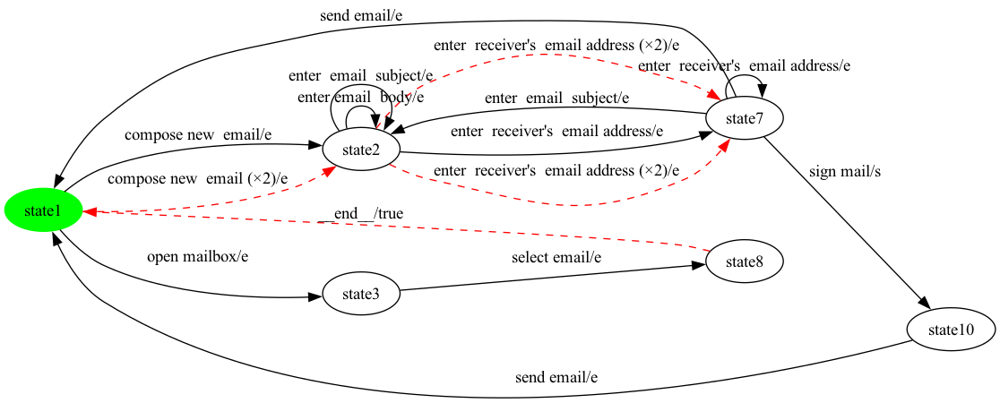
All-transitions coverage on the repaired FTS: 11/11 = 100.0% (15 raw cycle step(s): 11 real, 1 __end__, 3 __dup__, 0 __balance__).
Generated test cases (3 trip(s) from initial back to initial, hidden synthetics removed):
open mailbox → select emailcompose new email → enter email body → enter email subject → enter receiver's email address → send emailcompose new email → enter receiver's email address → enter email subject → enter receiver's email address → enter receiver's email address → sign mail → send emailSelected features: selected = {ad, e}
Projected FTS: 8 states, 15 transitions (14 real / 1 __end__).
Repaired FTS: 8 states, 15 transitions (14 real / 1 __end__).
Balanced FTS: 8 states, 18 transitions (14 real / 1 __end__ / 3 __dup__ / 0 __balance__).

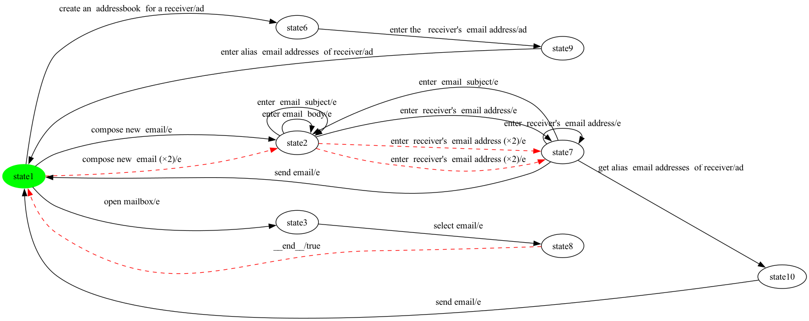
All-transitions coverage on the repaired FTS: 14/14 = 100.0% (18 raw cycle step(s): 14 real, 1 __end__, 3 __dup__, 0 __balance__).
Generated test cases (4 trip(s) from initial back to initial, hidden synthetics removed):
open mailbox → select emailcreate an addressbook for a receiver → enter the receiver's email address → enter alias email addresses of receivercompose new email → enter receiver's email address → send emailcompose new email → enter receiver's email address → enter email subject → enter email body → enter email subject → enter receiver's email address → enter receiver's email address → get alias email addresses of receiver → send emailSelected features: selected = {ad, au, e}
Projected FTS: 10 states, 20 transitions (18 real / 2 __end__).
Repaired FTS: 10 states, 20 transitions (18 real / 2 __end__).
Balanced FTS: 10 states, 25 transitions (18 real / 3 __end__ / 5 __dup__ / 0 __balance__).
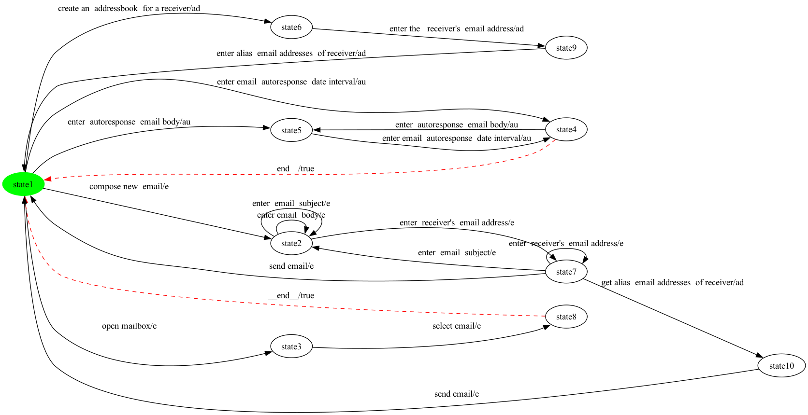
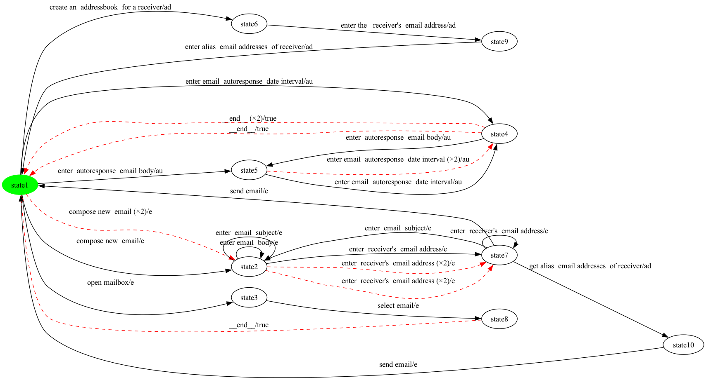
All-transitions coverage on the repaired FTS: 18/18 = 100.0% (25 raw cycle step(s): 18 real, 3 __end__, 5 __dup__, 0 __balance__).
Generated test cases (6 trip(s) from initial back to initial, hidden synthetics removed):
enter email autoresponse date interval → enter autoresponse email body → enter email autoresponse date intervalenter autoresponse email body → enter email autoresponse date intervalopen mailbox → select emailcreate an addressbook for a receiver → enter the receiver's email address → enter alias email addresses of receivercompose new email → enter receiver's email address → send emailcompose new email → enter receiver's email address → enter email subject → enter email body → enter email subject → enter receiver's email address → enter receiver's email address → get alias email addresses of receiver → send emailSelected features: selected = {ad, au, e, en, s}
Projected FTS: 11 states, 23 transitions (21 real / 2 __end__).
Repaired FTS: 11 states, 23 transitions (21 real / 2 __end__).
Balanced FTS: 11 states, 34 transitions (21 real / 3 __end__ / 11 __dup__ / 0 __balance__).
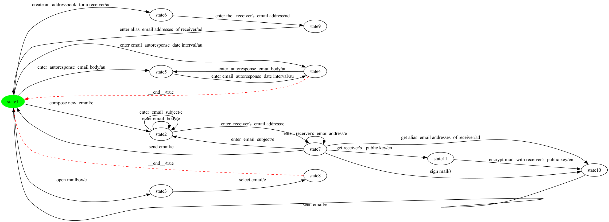
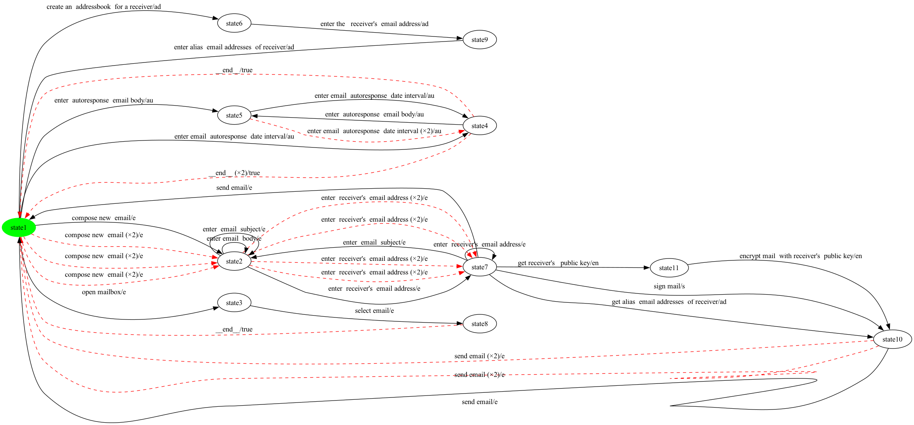
All-transitions coverage on the repaired FTS: 21/21 = 100.0% (34 raw cycle step(s): 21 real, 3 __end__, 11 __dup__, 0 __balance__).
Generated test cases (8 trip(s) from initial back to initial, hidden synthetics removed):
enter email autoresponse date interval → enter autoresponse email body → enter email autoresponse date intervalenter autoresponse email body → enter email autoresponse date intervalopen mailbox → select emailcreate an addressbook for a receiver → enter the receiver's email address → enter alias email addresses of receivercompose new email → enter receiver's email address → send emailcompose new email → enter receiver's email address → get receiver's public key → encrypt mail with receiver's public key → send emailcompose new email → enter receiver's email address → sign mail → send emailcompose new email → enter receiver's email address → enter email subject → enter email body → enter email subject → enter receiver's email address → enter receiver's email address → get alias email addresses of receiver → send emailSelected features: selected = {e, en, s}
Projected FTS: 7 states, 14 transitions (13 real / 1 __end__).
Repaired FTS: 7 states, 14 transitions (13 real / 1 __end__).
Balanced FTS: 7 states, 20 transitions (13 real / 1 __end__ / 6 __dup__ / 0 __balance__).

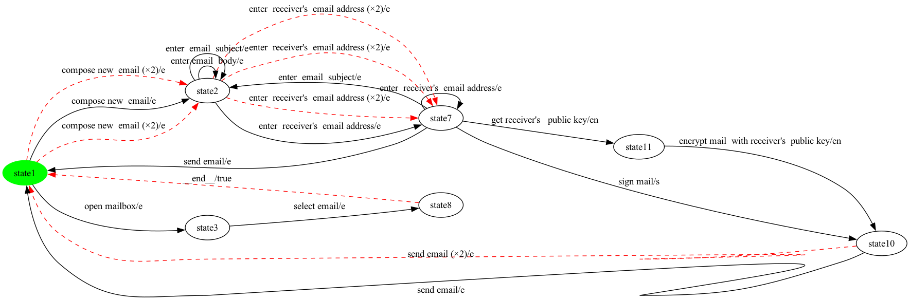
All-transitions coverage on the repaired FTS: 13/13 = 100.0% (20 raw cycle step(s): 13 real, 1 __end__, 6 __dup__, 0 __balance__).
Generated test cases (4 trip(s) from initial back to initial, hidden synthetics removed):
open mailbox → select emailcompose new email → enter receiver's email address → send emailcompose new email → enter receiver's email address → get receiver's public key → encrypt mail with receiver's public key → send emailcompose new email → enter receiver's email address → enter email subject → enter email body → enter email subject → enter receiver's email address → enter receiver's email address → sign mail → send emailSelected features: selected = {au, e, en, s}
Projected FTS: 9 states, 19 transitions (17 real / 2 __end__).
Repaired FTS: 9 states, 19 transitions (17 real / 2 __end__).
Balanced FTS: 9 states, 27 transitions (17 real / 3 __end__ / 8 __dup__ / 0 __balance__).

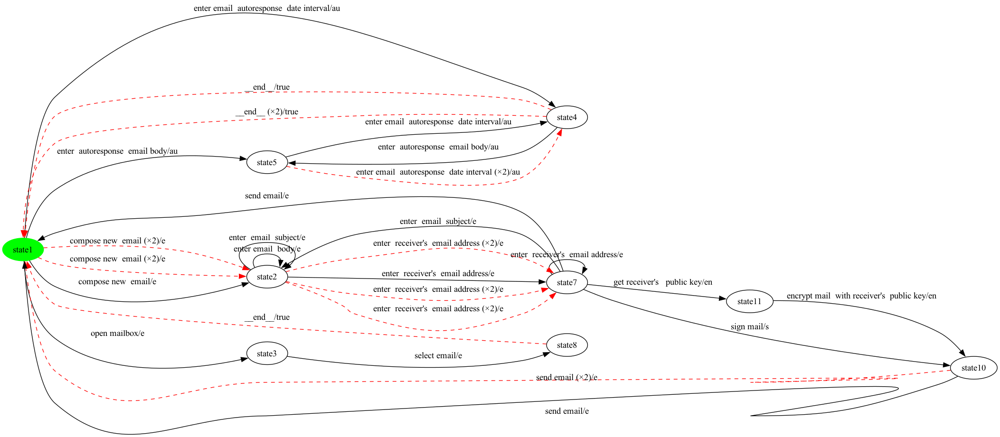
All-transitions coverage on the repaired FTS: 17/17 = 100.0% (27 raw cycle step(s): 17 real, 3 __end__, 8 __dup__, 0 __balance__).
Generated test cases (6 trip(s) from initial back to initial, hidden synthetics removed):
enter email autoresponse date interval → enter autoresponse email body → enter email autoresponse date intervalenter autoresponse email body → enter email autoresponse date intervalopen mailbox → select emailcompose new email → enter receiver's email address → send emailcompose new email → enter receiver's email address → get receiver's public key → encrypt mail with receiver's public key → send emailcompose new email → enter receiver's email address → enter email subject → enter email body → enter email subject → enter receiver's email address → enter receiver's email address → sign mail → send emailSelected features: selected = {ad, au, e, f, s}
Projected FTS: 10 states, 22 transitions (20 real / 2 __end__).
Repaired FTS: 10 states, 22 transitions (20 real / 2 __end__).
Balanced FTS: 10 states, 36 transitions (20 real / 3 __end__ / 14 __dup__ / 0 __balance__).

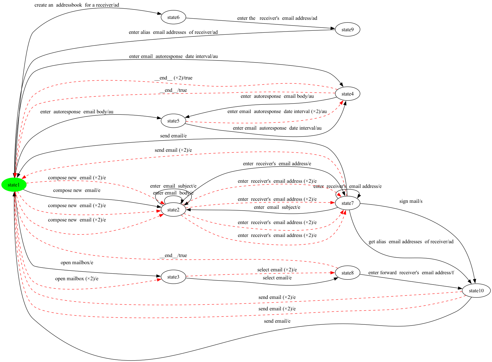
All-transitions coverage on the repaired FTS: 20/20 = 100.0% (36 raw cycle step(s): 20 real, 3 __end__, 14 __dup__, 0 __balance__).
Generated test cases (9 trip(s) from initial back to initial, hidden synthetics removed):
enter email autoresponse date interval → enter autoresponse email body → enter email autoresponse date intervalenter autoresponse email body → enter email autoresponse date intervalopen mailbox → select email → enter forward receiver's email address → send emailopen mailbox → select emailcreate an addressbook for a receiver → enter the receiver's email address → enter alias email addresses of receivercompose new email → enter receiver's email address → send emailcompose new email → enter receiver's email address → send emailcompose new email → enter receiver's email address → sign mail → send emailcompose new email → enter receiver's email address → enter email subject → enter email body → enter email subject → enter receiver's email address → enter receiver's email address → get alias email addresses of receiver → send emailSelected features: selected = {e, f, s}
Projected FTS: 6 states, 13 transitions (12 real / 1 __end__).
Repaired FTS: 6 states, 13 transitions (12 real / 1 __end__).
Balanced FTS: 6 states, 22 transitions (12 real / 1 __end__ / 9 __dup__ / 0 __balance__).
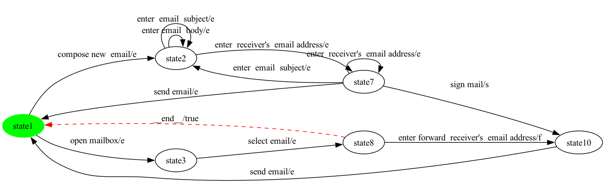
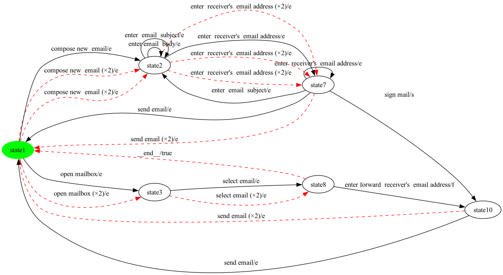
All-transitions coverage on the repaired FTS: 12/12 = 100.0% (22 raw cycle step(s): 12 real, 1 __end__, 9 __dup__, 0 __balance__).
Generated test cases (5 trip(s) from initial back to initial, hidden synthetics removed):
open mailbox → select email → enter forward receiver's email address → send emailopen mailbox → select emailcompose new email → enter receiver's email address → send emailcompose new email → enter receiver's email address → send emailcompose new email → enter receiver's email address → enter email subject → enter email body → enter email subject → enter receiver's email address → enter receiver's email address → sign mail → send emailSelected features: selected = {au, e}
Projected FTS: 7 states, 15 transitions (13 real / 2 __end__).
Repaired FTS: 7 states, 15 transitions (13 real / 2 __end__).
Balanced FTS: 7 states, 21 transitions (13 real / 3 __end__ / 6 __dup__ / 0 __balance__).
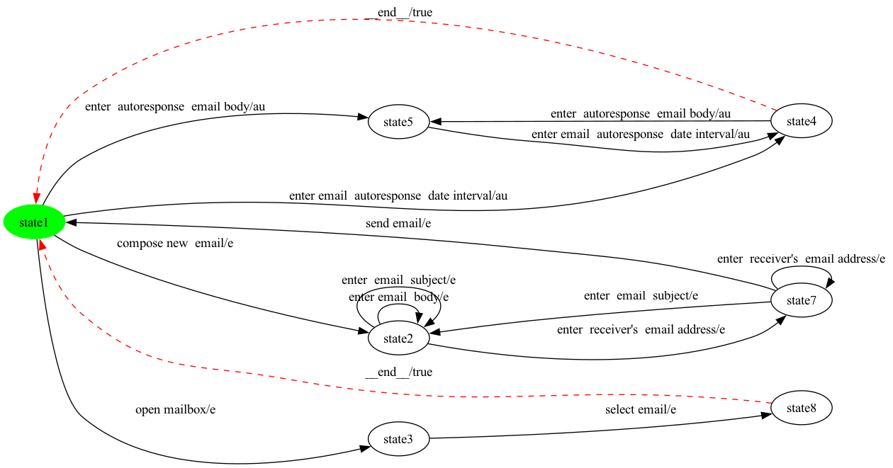
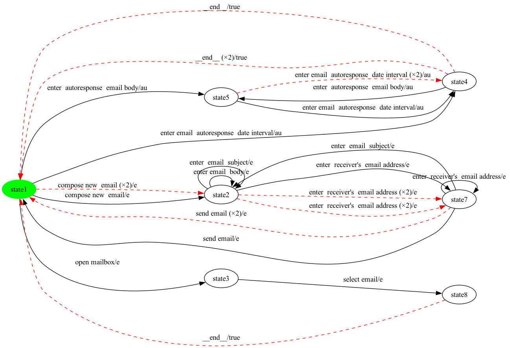
All-transitions coverage on the repaired FTS: 13/13 = 100.0% (21 raw cycle step(s): 13 real, 3 __end__, 6 __dup__, 0 __balance__).
Generated test cases (5 trip(s) from initial back to initial, hidden synthetics removed):
enter email autoresponse date interval → enter autoresponse email body → enter email autoresponse date intervalenter autoresponse email body → enter email autoresponse date intervalopen mailbox → select emailcompose new email → enter receiver's email address → send emailcompose new email → enter receiver's email address → enter email subject → enter email body → enter email subject → enter receiver's email address → enter receiver's email address → send emailSelected features: selected = {ad, e, f}
Projected FTS: 8 states, 16 transitions (15 real / 1 __end__).
Repaired FTS: 8 states, 16 transitions (15 real / 1 __end__).
Balanced FTS: 8 states, 25 transitions (15 real / 1 __end__ / 9 __dup__ / 0 __balance__).
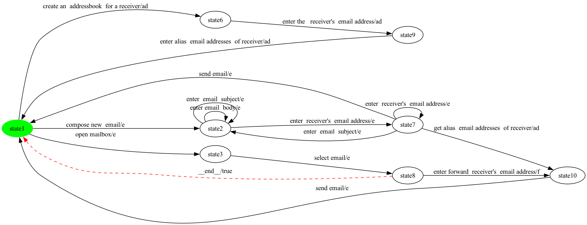
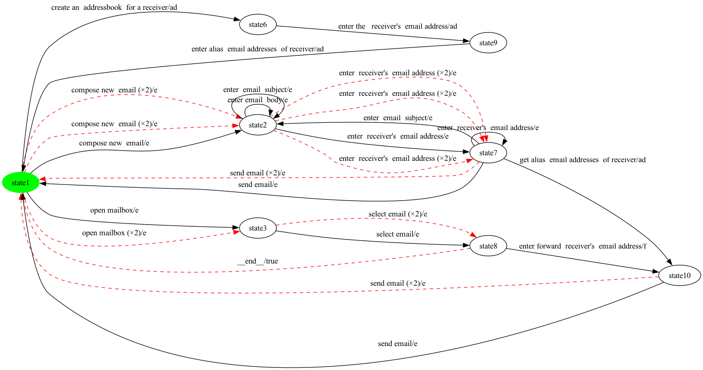
All-transitions coverage on the repaired FTS: 15/15 = 100.0% (25 raw cycle step(s): 15 real, 1 __end__, 9 __dup__, 0 __balance__).
Generated test cases (6 trip(s) from initial back to initial, hidden synthetics removed):
open mailbox → select email → enter forward receiver's email address → send emailopen mailbox → select emailcreate an addressbook for a receiver → enter the receiver's email address → enter alias email addresses of receivercompose new email → enter receiver's email address → send emailcompose new email → enter receiver's email address → send emailcompose new email → enter receiver's email address → enter email subject → enter email body → enter email subject → enter receiver's email address → enter receiver's email address → get alias email addresses of receiver → send emailSelected features: selected = {ad, au, e, f}
Projected FTS: 10 states, 21 transitions (19 real / 2 __end__).
Repaired FTS: 10 states, 21 transitions (19 real / 2 __end__).
Balanced FTS: 10 states, 32 transitions (19 real / 3 __end__ / 11 __dup__ / 0 __balance__).

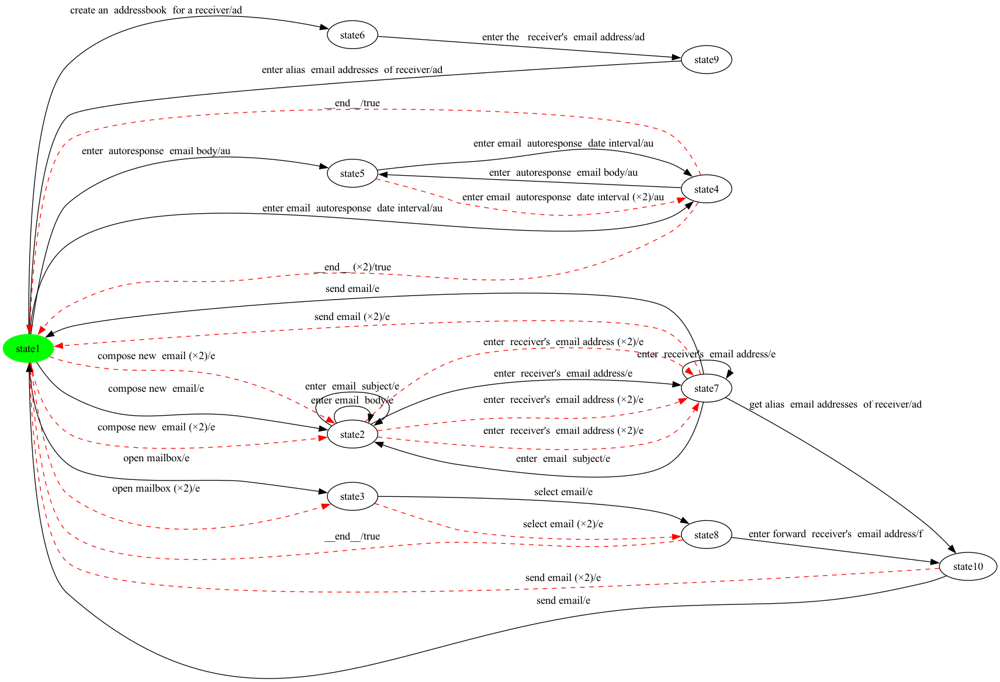
All-transitions coverage on the repaired FTS: 19/19 = 100.0% (32 raw cycle step(s): 19 real, 3 __end__, 11 __dup__, 0 __balance__).
Generated test cases (8 trip(s) from initial back to initial, hidden synthetics removed):
enter email autoresponse date interval → enter autoresponse email body → enter email autoresponse date intervalenter autoresponse email body → enter email autoresponse date intervalopen mailbox → select email → enter forward receiver's email address → send emailopen mailbox → select emailcreate an addressbook for a receiver → enter the receiver's email address → enter alias email addresses of receivercompose new email → enter receiver's email address → send emailcompose new email → enter receiver's email address → send emailcompose new email → enter receiver's email address → enter email subject → enter email body → enter email subject → enter receiver's email address → enter receiver's email address → get alias email addresses of receiver → send emailSelected features: selected = {ad, e, en}
Projected FTS: 9 states, 17 transitions (16 real / 1 __end__).
Repaired FTS: 9 states, 17 transitions (16 real / 1 __end__).
Balanced FTS: 9 states, 23 transitions (16 real / 1 __end__ / 6 __dup__ / 0 __balance__).
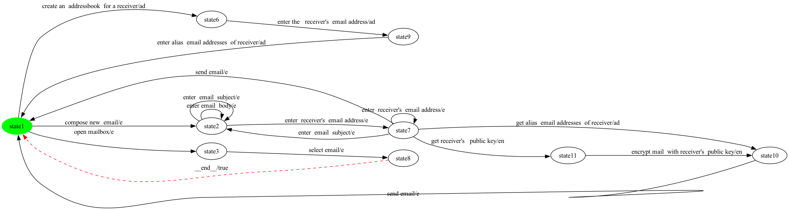
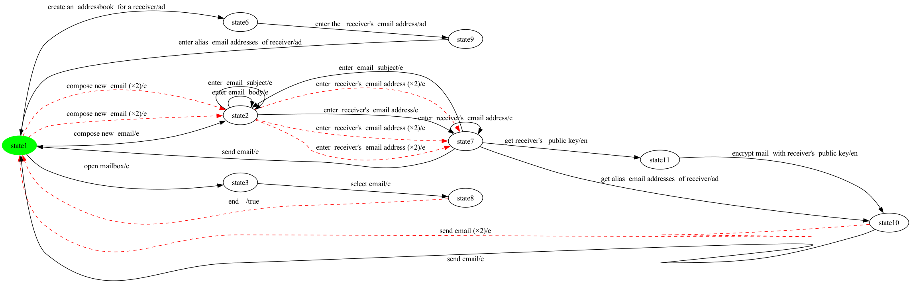
All-transitions coverage on the repaired FTS: 16/16 = 100.0% (23 raw cycle step(s): 16 real, 1 __end__, 6 __dup__, 0 __balance__).
Generated test cases (5 trip(s) from initial back to initial, hidden synthetics removed):
open mailbox → select emailcreate an addressbook for a receiver → enter the receiver's email address → enter alias email addresses of receivercompose new email → enter receiver's email address → send emailcompose new email → enter receiver's email address → get receiver's public key → encrypt mail with receiver's public key → send emailcompose new email → enter receiver's email address → enter email subject → enter email body → enter email subject → enter receiver's email address → enter receiver's email address → get alias email addresses of receiver → send emailSelected features: selected = {ad, e, s}
Projected FTS: 8 states, 16 transitions (15 real / 1 __end__).
Repaired FTS: 8 states, 16 transitions (15 real / 1 __end__).
Balanced FTS: 8 states, 22 transitions (15 real / 1 __end__ / 6 __dup__ / 0 __balance__).

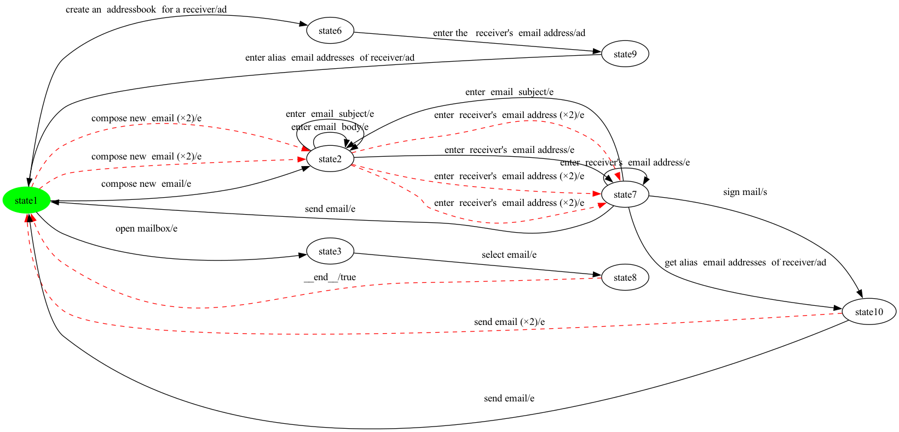
All-transitions coverage on the repaired FTS: 15/15 = 100.0% (22 raw cycle step(s): 15 real, 1 __end__, 6 __dup__, 0 __balance__).
Generated test cases (5 trip(s) from initial back to initial, hidden synthetics removed):
open mailbox → select emailcreate an addressbook for a receiver → enter the receiver's email address → enter alias email addresses of receivercompose new email → enter receiver's email address → send emailcompose new email → enter receiver's email address → sign mail → send emailcompose new email → enter receiver's email address → enter email subject → enter email body → enter email subject → enter receiver's email address → enter receiver's email address → get alias email addresses of receiver → send emailSelected features: selected = {au, e, f, s}
Projected FTS: 8 states, 18 transitions (16 real / 2 __end__).
Repaired FTS: 8 states, 18 transitions (16 real / 2 __end__).
Balanced FTS: 8 states, 29 transitions (16 real / 3 __end__ / 11 __dup__ / 0 __balance__).
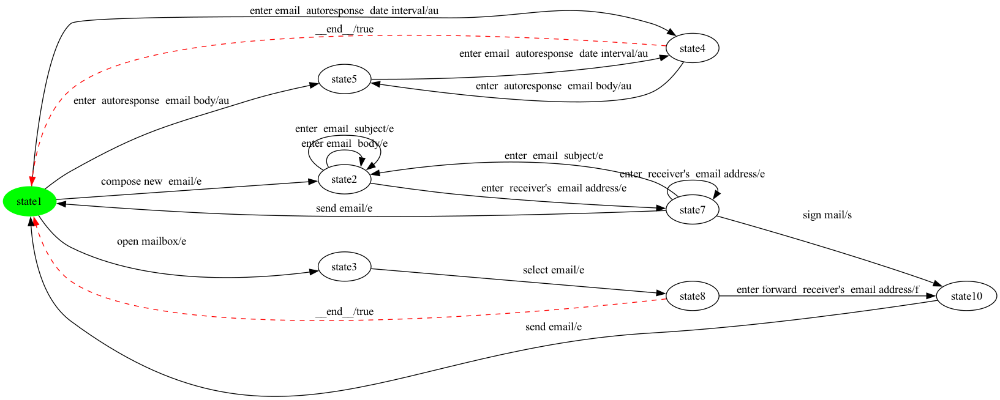
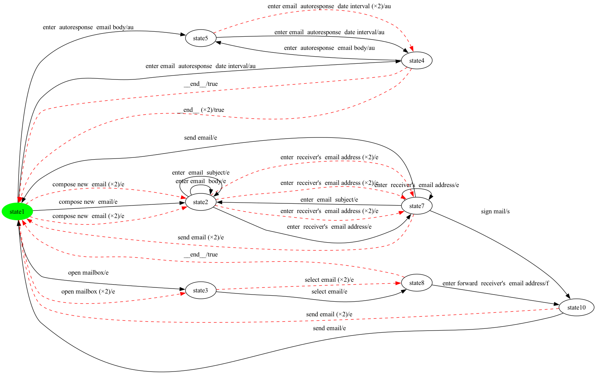
All-transitions coverage on the repaired FTS: 16/16 = 100.0% (29 raw cycle step(s): 16 real, 3 __end__, 11 __dup__, 0 __balance__).
Generated test cases (7 trip(s) from initial back to initial, hidden synthetics removed):
enter email autoresponse date interval → enter autoresponse email body → enter email autoresponse date intervalenter autoresponse email body → enter email autoresponse date intervalopen mailbox → select email → enter forward receiver's email address → send emailopen mailbox → select emailcompose new email → enter receiver's email address → send emailcompose new email → enter receiver's email address → send emailcompose new email → enter receiver's email address → enter email subject → enter email body → enter email subject → enter receiver's email address → enter receiver's email address → sign mail → send emailSelected features: selected = {e, en}
Projected FTS: 7 states, 13 transitions (12 real / 1 __end__).
Repaired FTS: 7 states, 13 transitions (12 real / 1 __end__).
Balanced FTS: 7 states, 16 transitions (12 real / 1 __end__ / 3 __dup__ / 0 __balance__).
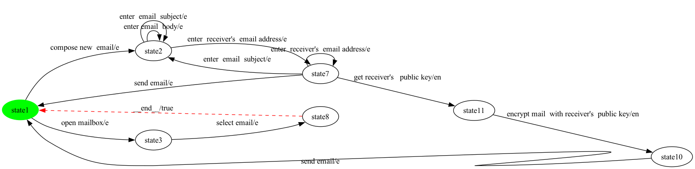

All-transitions coverage on the repaired FTS: 12/12 = 100.0% (16 raw cycle step(s): 12 real, 1 __end__, 3 __dup__, 0 __balance__).
Generated test cases (3 trip(s) from initial back to initial, hidden synthetics removed):
open mailbox → select emailcompose new email → enter receiver's email address → send emailcompose new email → enter receiver's email address → enter email subject → enter email body → enter email subject → enter receiver's email address → enter receiver's email address → get receiver's public key → encrypt mail with receiver's public key → send emailSelected features: selected = {au, e, f}
Projected FTS: 8 states, 17 transitions (15 real / 2 __end__).
Repaired FTS: 8 states, 17 transitions (15 real / 2 __end__).
Balanced FTS: 8 states, 25 transitions (15 real / 3 __end__ / 8 __dup__ / 0 __balance__).
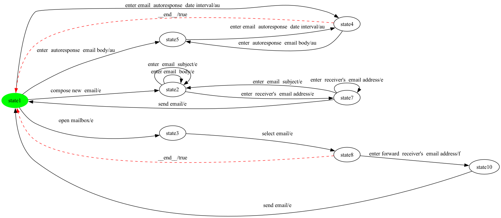
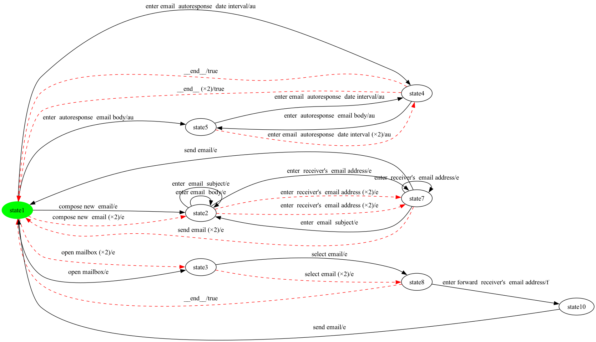
All-transitions coverage on the repaired FTS: 15/15 = 100.0% (25 raw cycle step(s): 15 real, 3 __end__, 8 __dup__, 0 __balance__).
Generated test cases (6 trip(s) from initial back to initial, hidden synthetics removed):
enter email autoresponse date interval → enter autoresponse email body → enter email autoresponse date intervalenter autoresponse email body → enter email autoresponse date intervalopen mailbox → select email → enter forward receiver's email address → send emailopen mailbox → select emailcompose new email → enter receiver's email address → send emailcompose new email → enter receiver's email address → enter email subject → enter email body → enter email subject → enter receiver's email address → enter receiver's email address → send emailSelected features: selected = {ad, e, f, s}
Projected FTS: 8 states, 17 transitions (16 real / 1 __end__).
Repaired FTS: 8 states, 17 transitions (16 real / 1 __end__).
Balanced FTS: 8 states, 29 transitions (16 real / 1 __end__ / 12 __dup__ / 0 __balance__).
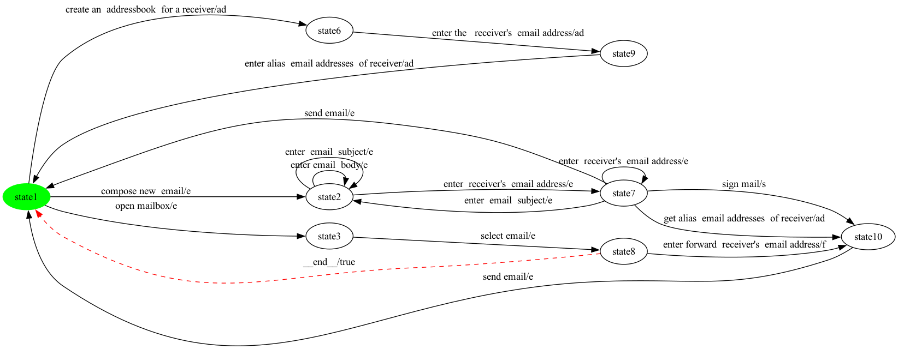
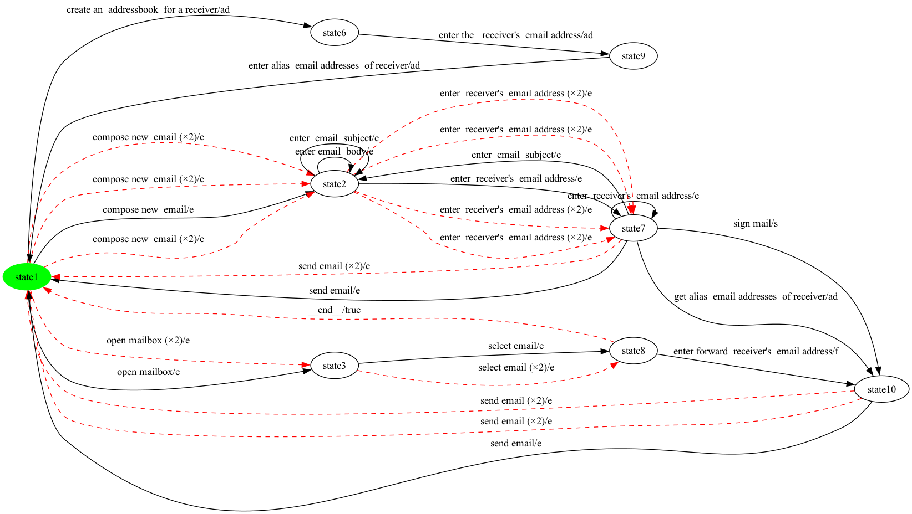
All-transitions coverage on the repaired FTS: 16/16 = 100.0% (29 raw cycle step(s): 16 real, 1 __end__, 12 __dup__, 0 __balance__).
Generated test cases (7 trip(s) from initial back to initial, hidden synthetics removed):
open mailbox → select email → enter forward receiver's email address → send emailopen mailbox → select emailcreate an addressbook for a receiver → enter the receiver's email address → enter alias email addresses of receivercompose new email → enter receiver's email address → send emailcompose new email → enter receiver's email address → send emailcompose new email → enter receiver's email address → sign mail → send emailcompose new email → enter receiver's email address → enter email subject → enter email body → enter email subject → enter receiver's email address → enter receiver's email address → get alias email addresses of receiver → send emailSelected features: selected = {ad, au, e, en}
Projected FTS: 11 states, 22 transitions (20 real / 2 __end__).
Repaired FTS: 11 states, 22 transitions (20 real / 2 __end__).
Balanced FTS: 11 states, 30 transitions (20 real / 3 __end__ / 8 __dup__ / 0 __balance__).

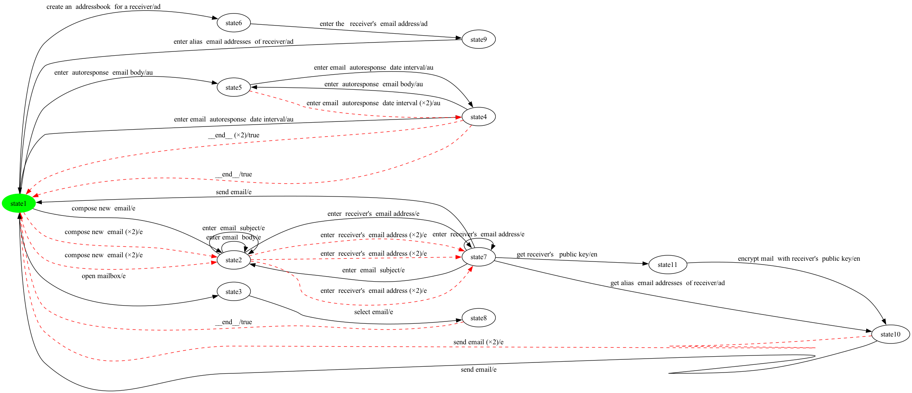
All-transitions coverage on the repaired FTS: 20/20 = 100.0% (30 raw cycle step(s): 20 real, 3 __end__, 8 __dup__, 0 __balance__).
Generated test cases (7 trip(s) from initial back to initial, hidden synthetics removed):
enter email autoresponse date interval → enter autoresponse email body → enter email autoresponse date intervalenter autoresponse email body → enter email autoresponse date intervalopen mailbox → select emailcreate an addressbook for a receiver → enter the receiver's email address → enter alias email addresses of receivercompose new email → enter receiver's email address → send emailcompose new email → enter receiver's email address → get receiver's public key → encrypt mail with receiver's public key → send emailcompose new email → enter receiver's email address → enter email subject → enter email body → enter email subject → enter receiver's email address → enter receiver's email address → get alias email addresses of receiver → send emailSelected features: selected = {au, e, en}
Projected FTS: 9 states, 18 transitions (16 real / 2 __end__).
Repaired FTS: 9 states, 18 transitions (16 real / 2 __end__).
Balanced FTS: 9 states, 23 transitions (16 real / 3 __end__ / 5 __dup__ / 0 __balance__).

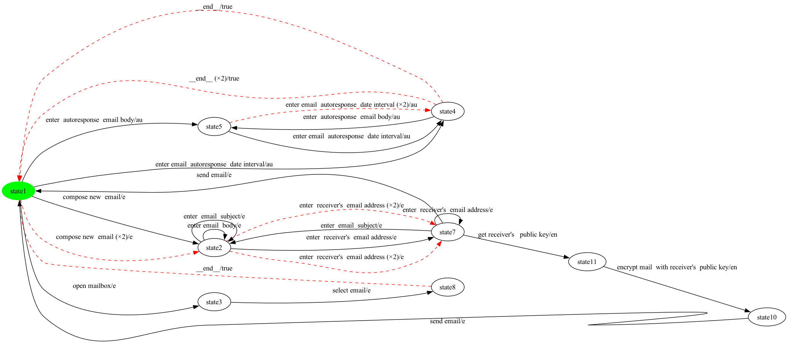
All-transitions coverage on the repaired FTS: 16/16 = 100.0% (23 raw cycle step(s): 16 real, 3 __end__, 5 __dup__, 0 __balance__).
Generated test cases (5 trip(s) from initial back to initial, hidden synthetics removed):
enter email autoresponse date interval → enter autoresponse email body → enter email autoresponse date intervalenter autoresponse email body → enter email autoresponse date intervalopen mailbox → select emailcompose new email → enter receiver's email address → send emailcompose new email → enter receiver's email address → enter email subject → enter email body → enter email subject → enter receiver's email address → enter receiver's email address → get receiver's public key → encrypt mail with receiver's public key → send emailSelected features: selected = {e, f}
Projected FTS: 6 states, 12 transitions (11 real / 1 __end__).
Repaired FTS: 6 states, 12 transitions (11 real / 1 __end__).
Balanced FTS: 6 states, 18 transitions (11 real / 1 __end__ / 6 __dup__ / 0 __balance__).

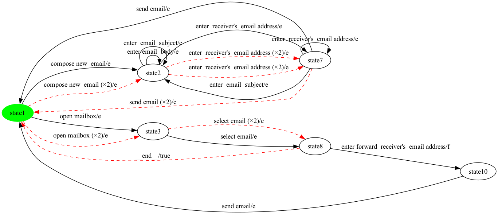
All-transitions coverage on the repaired FTS: 11/11 = 100.0% (18 raw cycle step(s): 11 real, 1 __end__, 6 __dup__, 0 __balance__).
Generated test cases (4 trip(s) from initial back to initial, hidden synthetics removed):
open mailbox → select email → enter forward receiver's email address → send emailopen mailbox → select emailcompose new email → enter email body → enter email subject → enter receiver's email address → send emailcompose new email → enter receiver's email address → enter email subject → enter receiver's email address → enter receiver's email address → send emailSelected features: selected = {ad, e, en, s}
Projected FTS: 9 states, 18 transitions (17 real / 1 __end__).
Repaired FTS: 9 states, 18 transitions (17 real / 1 __end__).
Balanced FTS: 9 states, 27 transitions (17 real / 1 __end__ / 9 __dup__ / 0 __balance__).
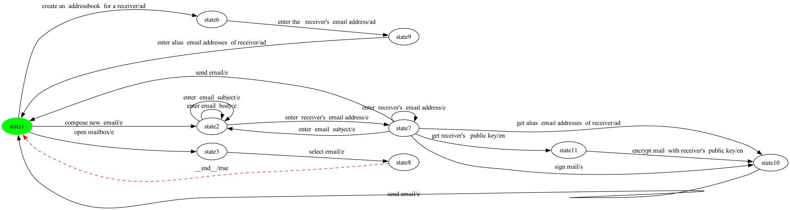
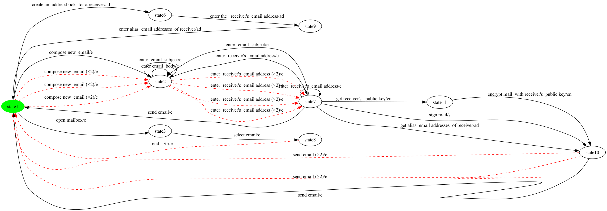
All-transitions coverage on the repaired FTS: 17/17 = 100.0% (27 raw cycle step(s): 17 real, 1 __end__, 9 __dup__, 0 __balance__).
Generated test cases (6 trip(s) from initial back to initial, hidden synthetics removed):
open mailbox → select emailcreate an addressbook for a receiver → enter the receiver's email address → enter alias email addresses of receivercompose new email → enter receiver's email address → send emailcompose new email → enter receiver's email address → get receiver's public key → encrypt mail with receiver's public key → send emailcompose new email → enter receiver's email address → sign mail → send emailcompose new email → enter receiver's email address → enter email subject → enter email body → enter email subject → enter receiver's email address → enter receiver's email address → get alias email addresses of receiver → send emailSelected features: selected = {ad, au, e, s}
Projected FTS: 10 states, 21 transitions (19 real / 2 __end__).
Repaired FTS: 10 states, 21 transitions (19 real / 2 __end__).
Balanced FTS: 10 states, 29 transitions (19 real / 3 __end__ / 8 __dup__ / 0 __balance__).
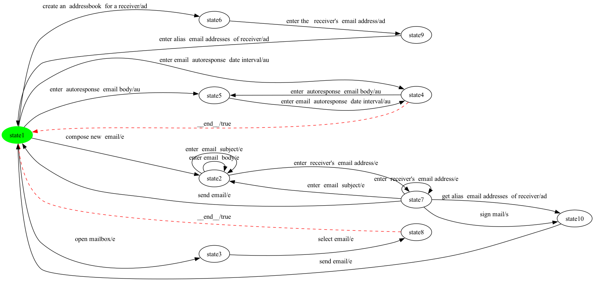
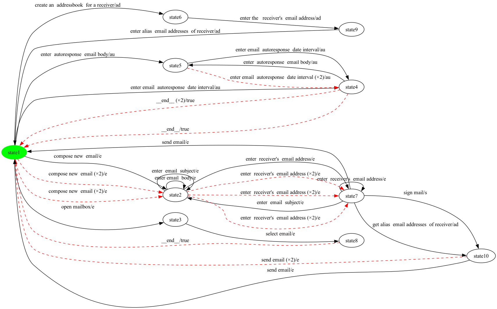
All-transitions coverage on the repaired FTS: 19/19 = 100.0% (29 raw cycle step(s): 19 real, 3 __end__, 8 __dup__, 0 __balance__).
Generated test cases (7 trip(s) from initial back to initial, hidden synthetics removed):
enter email autoresponse date interval → enter autoresponse email body → enter email autoresponse date intervalenter autoresponse email body → enter email autoresponse date intervalopen mailbox → select emailcreate an addressbook for a receiver → enter the receiver's email address → enter alias email addresses of receivercompose new email → enter receiver's email address → send emailcompose new email → enter receiver's email address → sign mail → send emailcompose new email → enter receiver's email address → enter email subject → enter email body → enter email subject → enter receiver's email address → enter receiver's email address → get alias email addresses of receiver → send emailSelected features: selected = {au, e, s}
Projected FTS: 8 states, 17 transitions (15 real / 2 __end__).
Repaired FTS: 8 states, 17 transitions (15 real / 2 __end__).
Balanced FTS: 8 states, 22 transitions (15 real / 3 __end__ / 5 __dup__ / 0 __balance__).

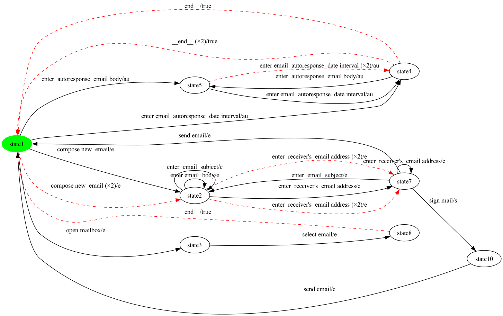
All-transitions coverage on the repaired FTS: 15/15 = 100.0% (22 raw cycle step(s): 15 real, 3 __end__, 5 __dup__, 0 __balance__).
Generated test cases (5 trip(s) from initial back to initial, hidden synthetics removed):
enter email autoresponse date interval → enter autoresponse email body → enter email autoresponse date intervalenter autoresponse email body → enter email autoresponse date intervalopen mailbox → select emailcompose new email → enter receiver's email address → send emailcompose new email → enter receiver's email address → enter email subject → enter email body → enter email subject → enter receiver's email address → enter receiver's email address → sign mail → send emailTotal products: 23.